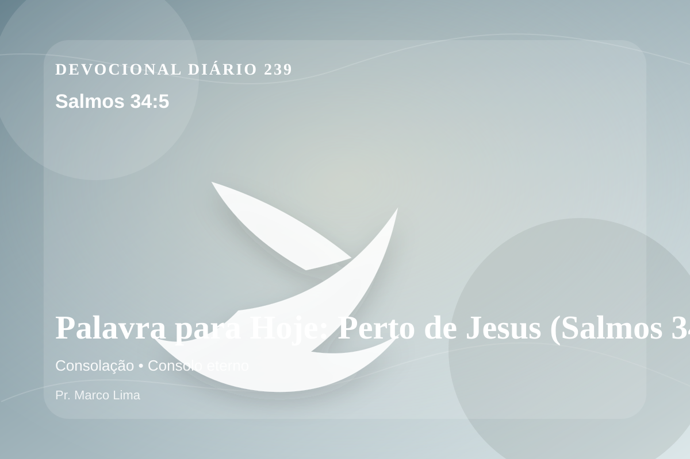

Palavra para Hoje: Perto de Jesus (Salmos 34:5)
Os que olham para ele ficam visivelmente alegres, e seus rostos não são envergonhados.
Pensamento
Hoje, a ênfase está em como esta Palavra alcança decisões pequenas, silenciosas e reais. Ao meditar em Salmos 34:5, não procure apenas conforto rápido; permita que Deus ensine, corrija, console e chame você para mais perto de Jesus.
Salmos 34:5 chama o coração a ouvir Deus com reverência e responder com fé prática. A Palavra não foi dada para enfeitar pensamentos religiosos, mas para conduzir pessoas reais ao Senhor.
O tema de consolação precisa ser recebido com simplicidade e seriedade. A maturidade cristã começa quando a Palavra deixa de ser apenas inspiração e passa a governar escolhas. Este tema aponta para a maneira como Deus forma o coração do Seu povo por meio da Palavra. A aplicação correta não nasce de frases soltas, mas de uma leitura reverente, contextual e obediente do texto bíblico.
Talvez o maior desafio de hoje não seja entender o versículo, mas permitir que ele exponha o que precisa ser entregue. Deus cura com verdade, não com distração espiritual.
Arrependimento não é apenas sentir peso na consciência; é voltar-se para Deus, abandonar o caminho que entristece o Senhor e confiar que a graça de Cristo é suficiente para perdoar e transformar.
Este é o evangelho que sustenta toda aplicação: Jesus Cristo morreu pelos pecadores, ressuscitou em vitória e chama cada pessoa a responder com fé, arrependimento e uma vida rendida ao Seu senhorio.
A salvação não nasce do esforço humano, mas da graça de Deus em Jesus. Quem crê não precisa fingir força; pode se render, confessar e recomeçar.
Antes de terminar, ore com simplicidade: “Senhor, mostra onde preciso me arrepender e dá-me fé para obedecer”. Depois, pratique o que Deus já deixou claro.
Para Praticar Hoje
- Leia Salmos 34:5 lentamente e destaque uma palavra ou expressão central do texto.
- Confesse a Deus um pecado, resistência ou frieza espiritual que esta Palavra revelou.
- Declare sua fé em Jesus Cristo e pratique hoje uma atitude concreta de arrependimento e obediência.
Oração
Pai, onde há dor, sê consolo. Onde há lágrima, sê esperança. Salmos 34:5 revela que Deus é o Pai de todas as consolações. Que eu receba o Teu consolo e o compartilhe com quem precisa. Guarda-me perto de Jesus.
{kind=link}